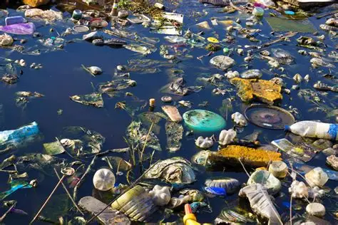
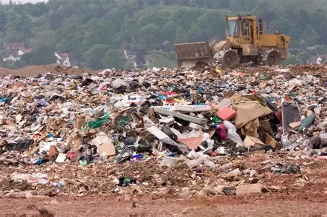

Problema ambiental
¿Qué sucede cuando tiramos la basura incorrectamente?
Cuando nosotros tiramos la basura incorrectamente, estamos contaminando el medio ambiente y afectando la salud de las personas, animales y vida ecologica, ya que la basura puede contener sustancias tóxicas que pueden filtrarse en el suelo y el agua afectando la calidad de agua y la salud de las personas, además de que la basura puede atraer a animales que pueden ser portadores de enfermedades y afectar la vida ecologica.
Otra consecuencia de tirar la basura incorrectamente puede ser la contaminación del suelo, agua, aire etc..
Uno de los principales problemas es la contaminación del suelo, ya que algunos residuos, como las pilas, los plásticos,
los metales y otros materiales, pueden liberar sustancias perjudiciales que afectan la calidad de la tierra. Esto dificulta el crecimiento de las
plantas y puede dañar los ecosistemas. Además, cuando tiramos basura en ríos, lagos y mares, contaminamos el agua y ponemos en peligro a los
animales acuáticos, que pueden confundir los residuos con alimentos o quedar atrapados en ellos.
Por esta razón, es muy importante aprender a separar correctamente los residuos orgánicos e inorgánicos, reutilizar los materiales que todavía sirven, reciclar los productos que pueden aprovecharse y depositar la basura en los contenedores correspondientes.
Contaminación del agua, aire y suelo
La contaminación del agua, el aire y el suelo es uno de los problemas ambientales más importantes que enfrenta nuestro planeta, se produce cuando diferentes sustancias, residuos y materiales perjudiciales llegan al medio ambiente y alteran sus condiciones naturales, gran parte de esta contaminación es causada por las actividades humanas, como tirar basura en lugares incorrectos, utilizar productos químicos, quemar residuos, arrojar desechos industriales y consumir grandes cantidades de productos desechables. Estos problemas afectan a los seres humanos, los animales, las plantas y los ecosistemas, por lo que es importante conocer sus causas y consecuencias para poder prevenirlos.
muchos de los efectos de la contaminación son irreversibles, por lo que es crucial que tomemos medidas para porteger el planeta desde nuestra vida cotidiana, como reducir el consumo de productos desechables, reciclar esos materiales que todavía pueden aprovecharse reutilizando los objetos y tirando la basura en los lugares correctos para evitar que se acumulen en el medio ambiente y afecten a la salud de las personas, animales y ecosistemas.
contaminacion del agua
- causas: Tirar basura en ríos, mares y lagos el derramar aceites y productos químicos; descargar aguas residuales.
- consecuencias: Daña la vida acuática, contamina fuentes de agua potable y afecta la salud humana.
- medidas de prevención: Reforestar zonas ribereñas, implementar sistemas de tratamiento de aguas residuales y sensibilizar a la población sobre la importancia de proteger los cuerpos de agua.
- Ejemplo: La contaminación de ríos por desechos industriales puede afectar la calidad del agua potable.

Contaminación del aire
- causas: Emisiones de vehículos, industrias y quemas de residuos.
- consecuencias: Problemas respiratorios, daño a la capa de ozono y cambio climático.
- medidas de prevención: Utilizar medios de transporte sostenibles, implementar tecnologías limpias y sensibilizar a la población sobre la importancia de reducir emisiones.
- Ejemplo: La contaminación del aire por emisiones industriales puede afectar la calidad del aire respirado.

Contaminación del suelo
- causas: El uso excesivo de pesticidas y fertilizantes, el vertido de desechos industriales y la minería.
- consecuencias: Reduce la fertilidad del suelo, afecta la cadena alimentaria y contamina fuentes de agua subterránea.
- medidas de prevención: Utilizar prácticas agrícolas sostenibles, implementar sistemas de tratamiento de desechos y sensibilizar a la población sobre la importancia de proteger el suelo.
- Ejemplo: La contaminación del suelo por pesticidas puede afectar la calidad del mismo.

Daño a animales y ecosistemas
El daño que sufren los animales y los ecosistemas por la contaminación del medio ambiente son devastadores para su propia supervivnecia, dañan su salud, su alimentación y su habitat natural ya que la contaminación del agua, el aire y el suelo suele afectar directamente a los animales y a los ecocosistemas ya que la contaminación puede afectar la disponabilidad de alimentos, el acceso a agua limpia y la calidad del aire que respiran los animales
Los ecosistemas también resultan afectados porque la contaminación modifica las condiciones naturales de los lugares donde viven los seres vivos. Por ejemplo,
cuando los ríos y mares se contaminan, los peces y otras especies acuáticas pierden sus hábitats y pueden morir por la presencia de sustancias tóxicas.
En los bosques, la acumulación de basura y los incendios destruyen la vegetación y obligan a muchos animales a abandonar sus hogares natales.
 volver arriba
volver arriba